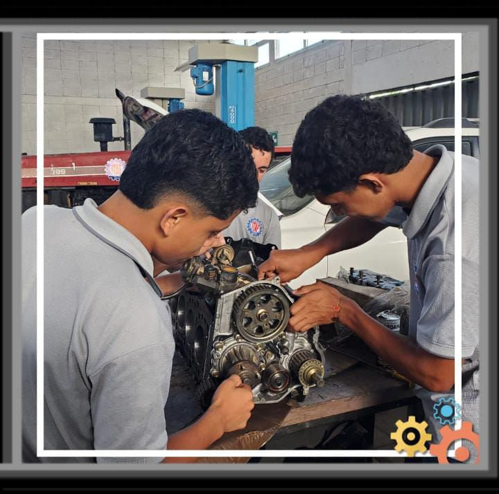

Perfil de Egreso
Al completar la carrera de Bachillerato Tecnico en Mecanica Automotriz (BTPMA), los egresados estaran equipados con un conjunto de habilidades y conocimientos que les permitiran desempeñarse de manera efectiva en el campo de la mecanica automotriz. El perfil de egreso incluye las siguientes competencias:
- Conocimientos Tecnicos: Los egresados tendran un conocimiento profundo de los sistemas y componentes de los vehiculos, incluyendo motores, transmisiones, sistemas de frenos, sistemas eléctricos y electrónicos, entre otros.
- Habilidades Practicas: Seran capaces de realizar diagnosticos precisos, reparaciones y mantenimiento preventivo en una variedad de vehiculos, utilizando herramientas y equipos especializados.
- Capacidad de Analisis: Podran interpretar manuales tecnicos, planos y diagramas, asi como utilizar software especializado para el diagnostico y reparacion de vehiculos.
- Trabajo en Equipo: Estaran preparados para colaborar eficazmente con otros tecnicos, ingenieros y profesionales del sector automotriz.
- Compromiso con la Seguridad: Tendran un fuerte compromiso con las normas de seguridad y salud ocupacional, asegurando un entorno de trabajo seguro tanto para ellos como para sus colegas.
- Actualizacion Continua: Estaran motivados para mantenerse actualizados con los avances tecnologicos en el campo de la mecanica automotriz, participando en capacitaciones y cursos adicionales.
- Atencion al Cliente: Desarrollaran habilidades para comunicarse efectivamente con los clientes, brindando asesoramiento tecnico y explicaciones claras sobre las reparaciones necesarias.
Ademas de las competencias tecnicas, los egresados del BTPMA habran desarrollado habilidades blandas como la resolucion de problemas, la gestion del tiempo y la adaptabilidad, que son esenciales para el exito en el entorno laboral.

En resumen, los egresados del Bachillerato Tecnico en Mecanica Automotriz (BTPMA) estaran bien preparados para ingresar al mercado laboral en el sector automotriz o continuar sus estudios en areas relacionadas, contribuyendo al desarrollo y mantenimiento de la industria automotriz.